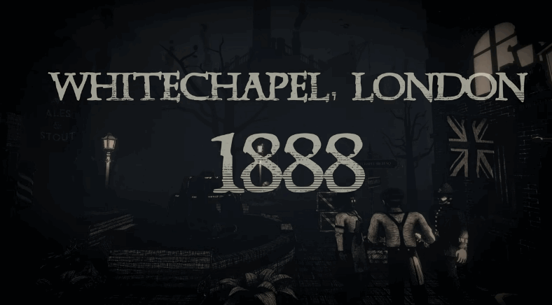
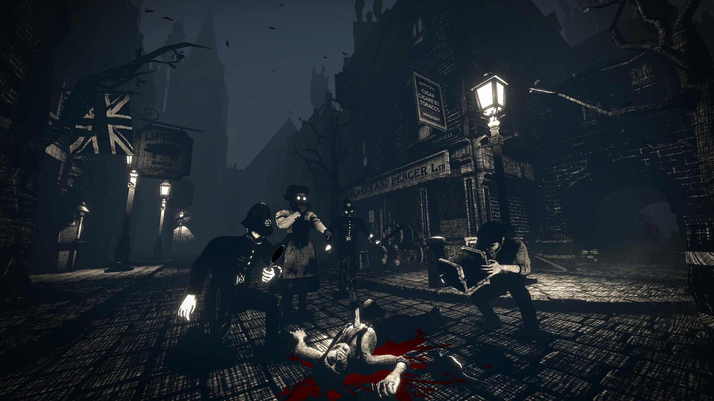
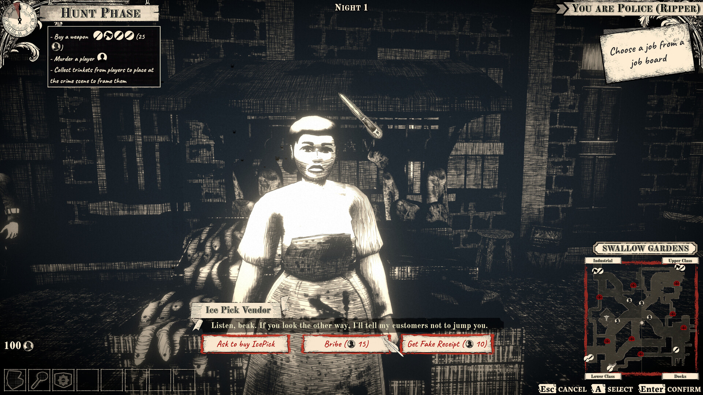
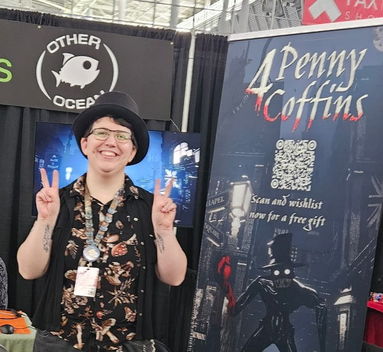
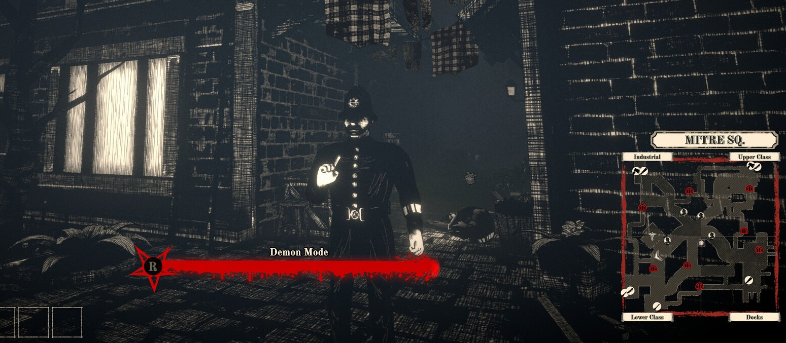

Kate Olguin
Game Designer • Community Coordinator
Game Designer • Community Coordinator
Announced in March 2026, this game is an online multiplayer PC title set in a grim Victorian London, where players solve murders via proximity chat in co-op and social deduction modes.

Up to 8 players collect and present evidence to identify a hidden murderer. In the social deduction mode, that murderer is a player who can tamper with evidence to frame others.

As lead designer, I spearheaded gameplay design, level design, narrative design, UX, and more. We're backed by the Canada Media Fund for this project, which I helped write the proposal and prepare deliverables for.

We're using Unity's visual scripting system for some parts of this game. Combining that with my knowledge of C# has allowed me to handle lots of gameplay implementation, especially for NPCs and quests.

Other Ocean sent me as the solo representative for 4 Penny Coffins at PAX East 2026 to demo the game for press and collect wishlists from attendees. A reporter from IGN called us their "hidden gem" of the event!

This game isn't out yet, so there's a lot that I can't talk about! I'm excited to share more details when the time comes.